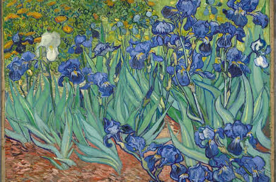
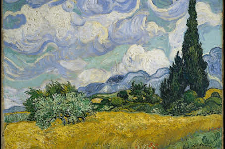

Biography
Vincent Willem van Gogh was born on March 30,1853 in Groot-Zundert, in the predominantly Catholic province of North Brabant in the southern Netherlands.
He was a post-impressionist painter whose work, notable for its beauty, emotion and color, highly influenced 20th-century art. He struggled with mental illness,
and remained poor and virtually unknown throughout his life. Van Gogh died in France at age 37 from a self-inflicted gunshot wound.
On July 27, 1890, Vincent van Gogh went out to paint in the morning carrying a loaded pistol and shot himself in the chest, but the bullet did not kill him.
He was found bleeding in his room. Van Gogh was distraught about his future because, in May of that year, his brother Theo had visited and spoke to him
about needing to be stricter with his finances.Van Gogh took that to mean Theo was no longer interested in selling his art.
Notable Work
The Starry Night
The Starry Night is an oil on canvas painted in June 1889, it depicts the view from the east-facing window of his asylum room at Saint-Rémy-de-Provence,Irises
Irises is one of several paintings of irises by the Dutch artist Vincent van Gogh, and one of a series of paintings he executed at the Saint Paul-de-Mausole asylum inWheat field
The painting depicts golden fields of ripe wheat, a dark fastigiate Provençal cypress towering like a green obelisk to the right and lighter green olive trees in theWheat field with crows
The Van Gogh Museum's Wheatfield with Crows was painted in July 1890, in the last weeks of van Gogh’s life. Many have claimed it as his last painting,
just before sunrise, with the addition of an idealized village.It has been in the permanent collection of the Museum of Modern Art in New York City since 1941,
acquired through the Lillie P. Bliss Bequest. It is regarded as among Van Gogh's finest works and is one of the most recognized paintings in the history of Western culture.
Saint-Rémy-de-Provence, France, in the last year before his death in 1890.
middle distance, with hills and mountains visible behind, and white clouds swirling in an azure sky above.
while it is also possible Tree Roots, or the previously mentioned Daubigny's Garden, was his final painting.
Photo Gallery




Artisan Links
Here is the link about Van Gogh.subscribe to a newsletter about Van Gogh?
Newsletter
receive email updates about Van Gogh?